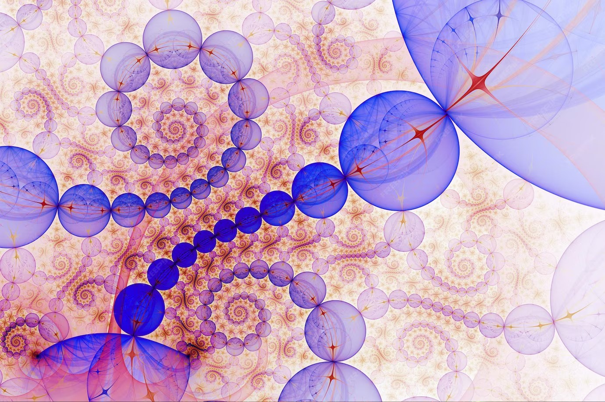
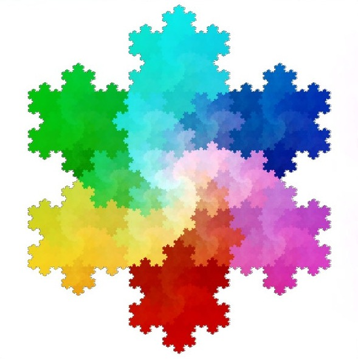
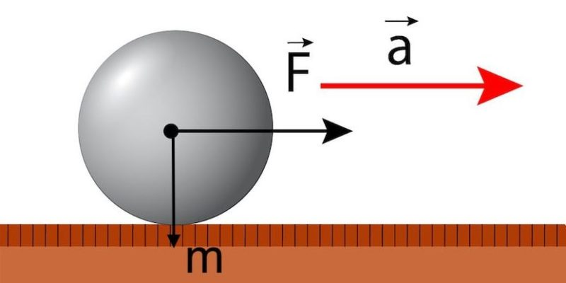
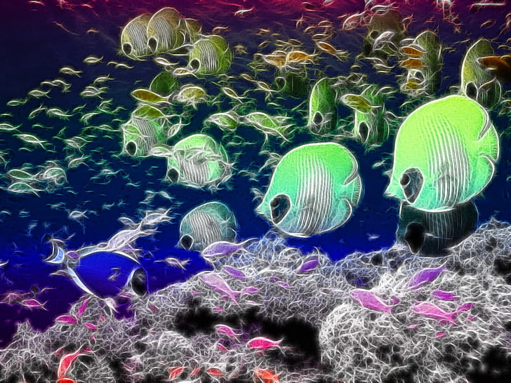

Objetivo: Profundizar en el pensamiento geométrico, analítico y variacional, aplicando herramientas algebraicas y tecnológicas.
Tema: Sistemas dinámicos discretos
La materia de Temas Selectos de Matemáticas 2 es impartida en el Colegio de Bachilleres del Estado de Quintana Roo Plantel Cancún 2 por el profesor Carlos Mariel Chan Ramayo en el aula 8.
| Aula: | Día: | Horario: |
| 8 | Martes | 7:00 AM |
| Miércoles | 8:00 AM | |
| Viernes | 11:00 AM - 1:00 PM |
Abarca el estudio de vectores, magnitudes y sistemas dinámicos, integrándolos con la composición de funciones y el cálculo avanzado para analizar como interactúan las fuerzas y las variables en un entorno matemático y físico.
Ver más
Son modelos que describen cómo cambia algo paso a paso. En lugar de un flujo continuo, usan saltos de tiempo definidos (como 1, 2, 3...) y una regla fija para calcular el siguiente estado basándose en el anterior.
Ver más
Vectores y GPSAprenderás a calcular no solo posiciones, sino direcciones y velocidades exactas. |
Sistemas en movimientoEl cambio de cosas complejas, como el clima o el motor de un coche en el tiempo. |
 Fórmulas conectadasHerramientas matemáticas para unir diferentes fuerzas en una sola solución. |

Ejemplo: Población de peces en un estanque
Fórmula: xₙ₊₁ = rxₙ(1 - xₙ)
Predice cuántos peces habrá el próximo año basándose en 3 cosas:
xₙ₊₁ (Número de iteración siguiente): Es el valor calculado para la próxima iteración después de aplicar la fórmula.
xₙ (Hoy): La cantidad de peces que tienes actualmente.
r (Crecimiento): Qué tan rápido se reproducen.
1 - xₙ (El freno): Representa la falta de comida o espacio; si hay demasiados peces, la población deja de crecer.
Ejemplo de sustitución: x₂ = (3)(0.2)(1-0.2) = 0.48
0.48 se convierte en el nuevo estado actual (xₙ) para obtener la siguiente iteración.
Salazar Vásquez, P., & Jácome Cortés, G. (2025). Temas Selectos de Matemáticas II. Compañía Editorial Nueva Imagen, S.A. de C.V.